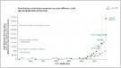
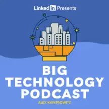

|
January 1, 2026, 7:55 AM
|
Top News
| Simon Willison / Simon Willison's Weblog: |

Some 2025 takeaways in LLMs: reasoning as a signature feature, coding agents were useful, subscriptions hit $200/month, and Chinese open-weight models impressed — This is the third in my annual series reviewing everything that happened in the LLM space over the past 12 months.
More: Ars Technica, Don't Worry About the Vase, and Fast Company
LinkedIn: Simon Willison and Arvind Balasundaram
Bluesky: @jeremymorrell.dev and @simonwillison.net
Forums: Hacker News and Lobsters
| Jeff Horwitz / Reuters: |
Internal docs reveal Meta's tactics to fend off pressure to crack down on scammers, including efforts to make scam ads “not findable” for regulators and others — As regulators press Meta to crack down on rogue advertisers on Facebook and Instagram, the social media giant has drafted a “playbook” to stall them.
More: SiliconANGLE, Digit, Communicate Online, Sherwood News, MS NOW, Interesting Engineering, ZeroHedge News, Fast Company, and Anadolu Ajansı …
X: @achimmuellers, @raywilton4, and @zerohedge
Bluesky: @andrewlevesque, @romanad, @sarwark.org, @caseynewton, @jbakcoleman, @migueldeicaza, @worklesshard, @campuscodi.risky.biz, @socialmedialab.ca, @jeffhorwitz, @jeffhorwitz, and @jeffhorwitz
Threads: @andymstone, @andymstone, @andymstone, and @andymstone
Forums: Hacker News, r/neoliberal, and r/technology
| George Hammond / Financial Times: |
Sources: SpaceX, OpenAI, and Anthropic could IPO in 2026; those three deals alone would exceed the total proceeds from roughly 200 US IPOs in 2025 — Three biggest US private tech groups plan listings as early as this year, raising hopes of windfall for banks, lawyers and investors
More: Los Angeles Times, Dow Jones Newswires, The Decoder, and The Economist
| Wall Street Journal: |
More: Quartz, New York Post, Benzinga, COINOTAG, The Decoder, CTech, and Hindustan Times
Forums: Hacker News and Slashdot
| Karissa Bell / Engadget: |
Adam Mosseri details trends shaping Instagram and says it'll be more practical to authenticate real media than label AI, as AI gets better at imitating reality — Adam Mosseri says creators should prioritize “unflattering” images to prove they are real. — It's no secret that AI-generated …
More: Livemint, The Verge, Business Insider, The Decoder, Digit, Moneycontrol, and The Verge
X: @milkkarten. LinkedIn: Stuart McDonald. Bluesky: @ykomska, @thatoldbear, @iansociologo, @brocktoon, @joeuchill, @blackamazon, @bwjones, @voidfemme, @benmffowler, @sarkastiklover, @chronotope.aramzs.xyz, @mathewolson.com, @highway62, @danhon.com, @violetsalazar, @karissabe, @thetrudz.photo, @mattschrader, @hypervisible.blacksky.app, and @jrosenbaum.com.au
| Biz Carson / Bloomberg: |
Thiel Capital opens an office in Miami, as Peter Thiel and others reportedly look to cut ties with California over a proposed ballot measure to tax billionaires — Peter Thiel's private investment firm opened an office in Miami's Wynwood neighborhood, expanding the billionaire's presence in Florida, Thiel Capital announced Wednesday.
More: Thiel Capital, Business Insider, San Francisco Chronicle, San Francisco Business Times, South Florida Business Journal, New York Post, and KTVU-TV
X: @govpressoffice, @cernovich, @jason, @bizcarson, @chamath, @julianklymochko, @chamath, @teddyschleifer, @jason, @teddyschleifer, and @shaughnessy119
Bluesky: @danny.page and @rmac
| Michael Acton / Financial Times: |
IDC expects Apple to ship just 45,000 units of the Vision Pro in Q4 2025; Sensor Tower says Apple cut digital ad spend for the headset by 95% in 2025 — High prices, limited apps and comfort issues expose difficulty of turning futuristic hardware into a mass-market product
| Iris Deng / South China Morning Post: |
 Report: China-based Moonshot AI, maker of Kimi models, raised a $500M Series C at a $4.3B valuation led by IDG Capital, with Alibaba and Tencent participating — The Kimi AI model developer is now valued at US$4.3 billion, with cash reserves worth US$1.4 billion
Report: China-based Moonshot AI, maker of Kimi models, raised a $500M Series C at a $4.3B valuation led by IDG Capital, with Alibaba and Tencent participating — The Kimi AI model developer is now valued at US$4.3 billion, with cash reserves worth US$1.4 billion
More: SiliconANGLE, Pandaily, DealStreetAsia, and TechNode
| Financial Times: |
A look at the rise of AI companion apps; a researcher counts 206 such apps on the App Store and 253 on Google Play, with 220M+ total downloads as of July 2025 — The technology is changing the way many people meet and form relationships but some experts believe it may do more harm than good
LinkedIn: Kieran Smith
| Song Jung-a / Financial Times: |
Analysts and manufacturers expect smartphone, PC, and consumer electronics prices to rise by as much as 20% in 2026, as AI demand drives up memory chip costs — Manufacturers and analysts warn AI data centre build-out is crowding out market for semiconductors
| Emily Nicolle / Bloomberg: |
Trump Media, owner of Truth Social, plans to distribute a new token to shareholders with partner Crypto.com, expected to operate on the Cronos blockchain — Trump Media and Technology Group Corp. plans to issue a new cryptocurrency, which will be distributed among its shareholders.
More: Trump Media & …, Yahoo Finance, The Crypto Times, crypto.news, BBC, PYMNTS.com, Financial Times, The Economic Times, Blockonomi, Cryptonews, Al Jazeera, Bitcoin Insider, DL News, New York Times, Coinpedia Fintech News, Benzinga, The Information, Reuters, ZeroHedge News, CoinDesk, CoinGape, BeInCrypto, Crypto Briefing, and NewsMax.com
| Wall Street Journal: |
Hong Kong's benchmark Hang Seng Index rose 28% in 2025, its best percentage performance since 2017, driven by tech, AI, and semiconductor stocks — The city's benchmark Hang Seng Index finished the year up 28% — Hong Kong stocks ended 2025 with a second consecutive annual gain …
Zoho:
Zoho Solo 2025 recap: The tools that put solopreneurs in control — Every solo business starts with an idea that slowly grows into something bigger. As that growth happens, so do the responsibilities of running everything on your own. In 2025, Solo focused on supporting that journey …
Sponsor Post
| Nilesh Christopher / Los Angeles Times: |
Hundreds of megawatts of new data center capacity are being planned in Vernon, a city near LA, which is a key US-Asia cable-linking hub and is becoming crowded — - 6 min Click here to listen to this article — Vernon, an industrial town with just a little more than 200 residents …
| Reuters: |
Elon Musk says Neuralink plans to start “high-volume production” of brain-computer interface devices and move to an almost automated surgical procedure in 2026 — Elon Musk's brain implant company Neuralink will start “high-volume production” of brain-computer interface devices …
More: Business Insider and Digit
X: @checkcanopy, @quinnypig, @0xunihax0r, @moneyacademyke, @teslaradiox, @elonmusk, @teortaxestex, @andrewzywiecmd, @sovmichael, and @serobinsonjr
Bluesky: @fagankara, @rowyourbot, @fiddledidi, @rowyourbot, @niedermeyer.online, @juniorhoncho, @brienneofsnark, @bumblesnuff, @lorak, and @samwhyte
| Reuters: |
TSMC says the US government has granted the company an annual license to import US chip manufacturing equipment to its facilities in Nanjing, China — The U.S. government has granted an annual license to Taiwan Semiconductor Manufacturing (2330.TW) to import U.S. chip manufacturing equipment …
Sponsor Posts
Google:
Try Gemini 3 Pro — Google's newest and most intelligent AI model that helps you bring any idea to life
Soxton:
AI-powered law for startups — Soxton automates startup legal so founders can move faster and sleep better. We handle incorporation, advisor, employment and commercial contracts. Join the waitlist for early access!
Zoho:
Zoho Solo 2025 recap: The tools that put solopreneurs in control — Every solo business starts with an idea that slowly grows into something bigger. As that growth happens, so do the responsibilities of running everything on your own.
IDrive:
Protecting your Cloud Applications Data — Backing up Office 365, Google Workspace, Dropbox & Box data is critical to preventing data loss or corruption, complying with laws and avoiding critical downtime in case of a disaster.
Featured Podcasts
The Talk Show With John Gruber:
'2025 Year in Review', With Rene Ritchie
The director's commentary track for Daring Fireball. Long digressions on Apple, technology, design, movies, and more.
Subscribe to The Talk Show With John Gruber.
Access:
ACCESS Wrapped: Our favorite guest moments so far
A show about the tech industry's inside conversation, hosted by tech reporter Alex Heath and founder whisperer Ellis Hamburger.
Subscribe to Access.

Big Technology Podcast:
Best of Big Technology: Demis Hassabis On AGI, Deceptive AIs, Building a Virtual Cell
The Big Technology Podcast takes you behind the scenes in the tech world featuring interviews with plugged-in insiders and outside agitators.
Subscribe to Big Technology Podcast.
Channels with Peter Kafka:
Craig Finn on Friendship, Fans and The Hold Steady's Second Life
Media and tech aren't just intersecting - they're fully intertwined. To understand how those worlds work, Peter Kafka talks to industry leaders, upstarts and observers.
Subscribe to Channels with Peter Kafka.
The Social Radars:
Jared Friedman, Partner, Y Combinator; Co-founder, Scribd
Come be a fly on the wall as Y Combinator's Jessica Livingston and Carolynn Levy talk to some of the most successful founders in Silicon Valley about how they did it.
Subscribe to The Social Radars.
Tools and Weapons with Brad Smith:
Ted Sarandos: Netflix and how tech changed storytelling
Microsoft Vice Chair and President Brad Smith speaks with leaders in government, business, and culture to explore the most critical challenges at the intersection of technology and society.
Subscribe to Tools and Weapons with Brad Smith.
Newest
Financial Times:
A look at the rise of AI companion apps; a researcher counts 206 such apps on the App Store and 253 on Google Play, with 220M+ total downloads as of July 2025Find
60 minutes ago
Nilesh Christopher / Los Angeles Times:
Hundreds of megawatts of new data center capacity are being planned in Vernon, a city near LA, which is a key US-Asia cable-linking hub and is becoming crowdedFind
3½ hours ago
George Hammond / Financial Times:
Sources: SpaceX, OpenAI, and Anthropic could IPO in 2026; those three deals alone would exceed the total proceeds from roughly 200 US IPOs in 2025Find
5½ hours ago
Wall Street Journal:
Hong Kong's benchmark Hang Seng Index rose 28% in 2025, its best percentage performance since 2017, driven by tech, AI, and semiconductor stocksFind
5½ hours ago
Song Jung-a / Financial Times:
Analysts and manufacturers expect smartphone, PC, and consumer electronics prices to rise by as much as 20% in 2026, as AI demand drives up memory chip costsFind
5½ hours ago
Iris Deng / South China Morning Post:
Report: China-based Moonshot AI, maker of Kimi models, raised a $500M Series C at a $4.3B valuation led by IDG Capital, with Alibaba and Tencent participatingFind
7 hours ago
Simon Willison / Simon Willison's Weblog:
Some 2025 takeaways in LLMs: reasoning as a signature feature, coding agents were useful, subscriptions hit $200/month, and Chinese open-weight models impressedFind
7 hours ago
From Mediagazer
Katie Campione / Deadline:Jordan Moreau / Variety:
Brent Lang / Variety:
Upcoming Tech Events
Earlier Picks
| Essi Lehto / Reuters: |
More: Benzinga, The Guardian, Newser, Reuters, Euro Weekly News, The US Sun, InfoRiskToday.com, The Maritime Executive, Tom's Hardware, Radio Free Europe/Radio …, The Indian Express, The Record, Associated Press, and Bloomberg Law
X: @tsahkna, @petteriorpo, and @marinetraffic
Bluesky: @duncandixoncoffee and @rvps2001
Forums: r/worldnews, r/neoliberal, and Slashdot
| Reuters: |
More: Taiwan News, Cautious Optimism, SiliconANGLE, Breitbart, The Register, iPhone in Canada, Yahoo Finance, Yahoo Finance, Sherwood News, Wccftech, Benzinga, NDTV Profit, CNBC, Proactiveinvestors UK, Investor's Business Daily, Modern Diplomacy, ZeroHedge News, AIN, Sharecast, COINOTAG, The Decoder, Hürriyet Daily News, The Standard, The Economic Times, DigiTimes, The Straits Times, and South China Morning Post
X: @zephyr_z9, @dnystedt, @teortaxestex, @jukan05, @omercheeema, @zephyr_z9, @danielnewmanuv, @firstadopter, @zephyr_z9, @zephyr_z9, @zephyr_z9, @jukan05, and @stocksavvyshay. Forums: r/NVDA_Stock